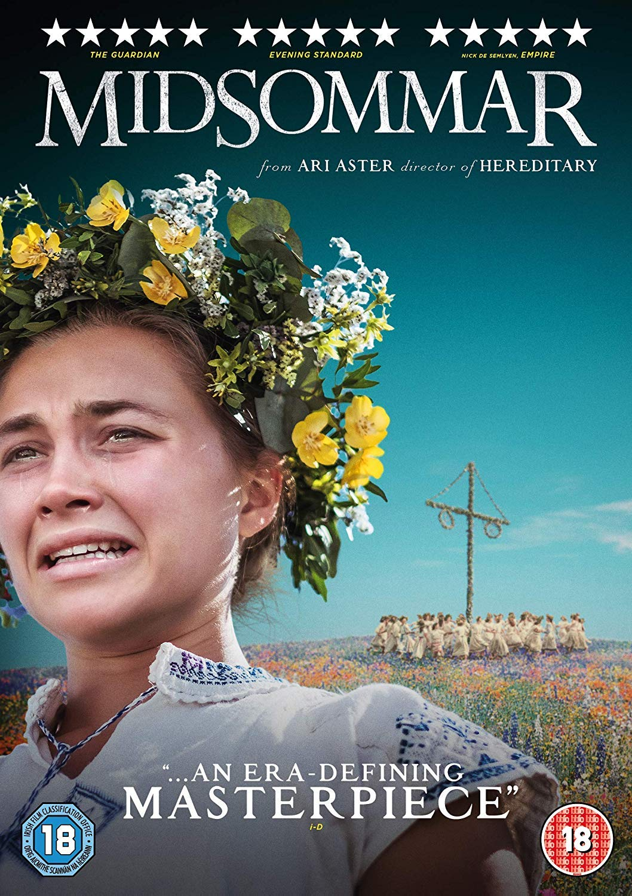

Este portal está dedicado a explorar las mejores películas y series de terror que han marcado la historia del cine. Aquí encontrarás análisis, rankings, recomendaciones y todo lo que necesitas saber sobre el género más intenso del séptimo arte.
Hereditary (2018) - La película que revolucionó el terror moderno
Películas de Terror Imperdibles
Top Películas de Terror (por impacto cinematográfico)
Hereditary (2018) - Ari Aster
Hereditary - Terror psicológico que redefine el género
The Exorcist (1973) - William Friedkin
The Exorcist - Clásico del terror sobrenatural
The Shining (1980) - Stanley Kubrick
The Shining - Obra maestra de Kubrick
Halloween (1978) - John Carpenter
Halloween - El slasher que definió el género
Get Out (2017) - Jordan Peele
Get Out - Terror social innovador
Midsommar (2019) - Ari Aster

Midsommar - Folk horror perturbador
The Babadook (2014) - Jennifer Kent
The Babadook - Terror maternal psicológico
Subgéneros de Terror
Terror Psicológico
Slasher
Found Footage
Body Horror
Folk Horror
Supernatural
Directores de Terror Destacados
Ari Aster
Director de Hereditary y Midsommar, maestro del terror psicológico
Jordan Peele
Director de Get Out y Us, innovador en terror social
Jennifer Kent
Directora de The Babadook, especialista en terror maternal
John Carpenter
Leyenda del terror con Halloween y The Thing
Series de Terror Imperdibles
Comparativa de Series de Terror
Serie
Año
Temporadas
Calificación IMDB
Estado
The Haunting of Hill House
2018
1
8.6
Completada
American Horror Story
2011-
12
8.0
En emisión
The Walking Dead
2010-2022
11
8.2
Finalizada
Stranger Things
2016-2025
5
8.7
Finalizando
Hereditary: La Serie
2024
1
9.1
En desarrollo
Contenido Multimedia
Audio: Banda Sonora de Hereditary
Nota: Este es un ejemplo de implementación de audio. El archivo no existe actualmente.
Video: Tráiler de Hereditary
Nota: Este es un ejemplo de implementación de video. El archivo no existe actualmente.
Mapa: Ubicaciones de Rodaje de Películas de Terror
Formulario de Contacto
Acerca de
Este portal web ha sido desarrollado como parte del curso de ASIR (Administración de Sistemas Informáticos en Red) para demostrar el uso de las tecnologías web fundamentales, con un enfoque especial en el género de terror cinematográfico.


_theatrical_poster.jpg)